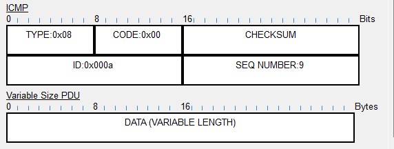
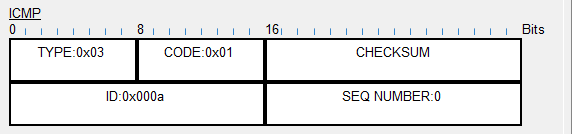
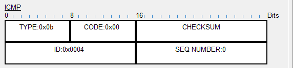

| 8bit | 8bit | 16bit |
|---|---|---|
| Type | Code | CHECKSUM |
| ID | SEQ NUMBER | |
| Data | ||
3：终点不可达 unreachable → 通知源点
11：路由超时 Time Exceeded → 丢弃并通知源点
12：参数错误 Parameter Problem → 丢弃并通知源点
5：重定向 Redirect → 通知源点
8：回显请求 Echo Request
0：回显应答 Echo Reply
0：网络不可达
1：主机不可达
2：协议不可达
3：端口不可达
4：需要分片，但是设置为禁止分片 DF=1


